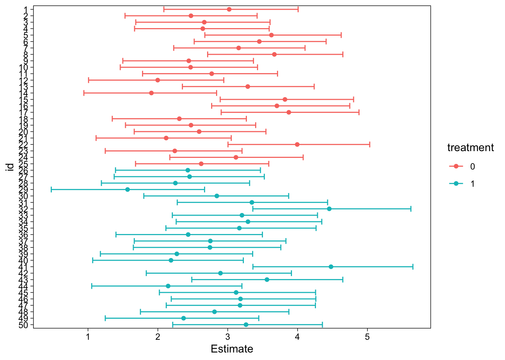

library(tidyverse)
library(rio)
dat <- import(
"http://www.intensivelongitudinal.com/ch4/ch4R.zip",
setclass = "tibble",
colClasses = c("id" = "factor", "treatment" = "factor")
)How to calculate contrasts from a fitted brms model
statistics
tutorial
R
brms
Answer more questions with your estimated parameters, without refitting the model.
brms (Bayesian Regression Models using Stan) is an R package that allows fitting complex (multilevel, multivariate, mixture, …) statistical models with straightforward R modeling syntax, while using Stan for bayesian inference under the hood. You will find many uses of that package on this blog. I am particularly fond of brms’ helper functions for post-processing (visualizing, summarizing, etc) the fitted models. In this post, I will show how to calculate and visualize arbitrary contrasts (aka “(general linear) hypothesis tests”) with brms, with full uncertainty estimates.
Models and contrasts
Here, we will discuss linear models, which regress an outcome variable on a weighted combination of predictors, while allowing the weights to vary across individuals (hierarchical linear regression). After fitting the model, you will have estimates of the weights (“beta weights”, or simply regression parameters) that typically consist of an intercept (estimated level of outcome variable when all predictors are zero) and slopes, which indicate how the outcome variable changes as function of one-unit changes of the predictors, when other predictors are at 0.
However, we are often interested in further questions (contrasts, “general linear hypothesis tests”). For example, your model output may report one group’s change over time, and the difference of that slope between groups, but you are particularly interested in the other group’s slope. To find that slope, you’d need to calculate an additional contrast from your model. This is also commonly called “probing interactions” or sometimes “post hoc testing”.
Example data
To make this concrete, let’s consider a hypothetical example data set from Bolger and Laurenceau (2013): Two groups’ (treatment: 0/1) self-reported intimacy was tracked over 16 days (time). The dataset contains data from a total of 50 (simulated) individuals.
Model
We might be interested in how the two groups’ feelings of intimacy developed over time, and how their temporal trajectories of intimacy differed. To be more specific, we have three questions:
Q1: How did intimacy develop over time for group 0? Q2: How did intimacy develop over time for group 1? Q3: How different were these two time-courses?
To answer, we model intimacy as a function of time, treatment, and their interactions. The hierarchical model includes varying intercepts and effects of time across participants.
library(brms)
fit <- brm(
intimacy ~ time * treatment + (time | id),
family = gaussian(),
data = dat,
file = "intimacymodel"
)Interpreting the model’s parameters
Let’s then answer our questions by looking at the model’s summary, and interpreting the estimated population-level parameters (the posterior means and standard deviations).
| Parameter | Estimate | Est.Error | Q2.5 | Q97.5 |
|---|---|---|---|---|
| b_Intercept | 2.89 | 0.21 | 2.49 | 3.31 |
| b_time | 0.05 | 0.02 | 0.00 | 0.09 |
| b_treatment1 | -0.05 | 0.30 | -0.68 | 0.52 |
| b_time:treatment1 | 0.06 | 0.03 | 0.00 | 0.13 |
The first lesson is that most models are simply too complex to interpret by just looking at the numerical parameter estimates. Therefore, we always draw figures to help us interpret what the model thinks is going on. The figure below shows example participants’ data (left) and the model’s estimated effects on the right.

Then, we can begin interpreting the parameters. First, the intercept indicates estimated intimacy when time and treatment were at their respective baseline levels (0). It is always easiest to interpret the parameters by eyeballing the right panel of the figure above and trying to connect the numbers to the figure. This estimate is the left-most point of the red line.
The estimated time parameter describes the slope of the red line (Q1); treatment1 is the difference between the two lines at time zero (Q3). However, we cannot immediately answer Q2 from the parameters, although we can see that the slope of the blue line is about 0.05 + 0.06. To get the answer to Q2, or more generally, any contrast or “general linear hypothesis test” from a brms model, we can use the hypothesis() method.
hypothesis()
hypothesis() truly is an underappreciated method of the brms package. It can be very useful in probing complex models. It allows us to calculate, visualize, and summarize, with full uncertainty estimates, any transformation of the model’s parameters. These transformations are often called “contrasts” or “general linear hypothesis tests”. But really, they are just transformations of the joint posterior distribution of the model’s parameters.
To answer Q2, then, we encode our question into a combination of the models parameters:
q2 <- c(q2 = "time + time:treatment1 = 0")The slope of group 1 is calculated from the model’s parameters by adding the slope of group 0 (time) and the interaction term time:treatment1. = 0 indicates that we are interested in contrasting the resulting estimate the zero (“testing against zero” or even “testing the null hypothesis”). Then, we pass this named string to hypothesis(), and observe the results.
q2_answer <- hypothesis(fit, q2)
q2_answerHypothesis Tests for class b:
Hypothesis Estimate Est.Error CI.Lower CI.Upper Evid.Ratio Post.Prob Star
1 q2 0.11 0.02 0.06 0.16 NA NA *
---
'CI': 90%-CI for one-sided and 95%-CI for two-sided hypotheses.
'*': For one-sided hypotheses, the posterior probability exceeds 95%;
for two-sided hypotheses, the value tested against lies outside the 95%-CI.
Posterior probabilities of point hypotheses assume equal prior probabilities.The output indicates that the estimated answer to Question 2 is 0.11 with a standard error of 0.02. I will return to Evid.Ratio and Post.Prob shortly.
The results can also be visualized.
plot(q2_answer)That figure shows the (samples from the) posterior distribution of the answer to Question 2.
More contrasts
With hypothesis() you can answer many additional questions about your model, beyond the parameter estimates. To illustrate, say we are interested in the groups’ difference in intimacy at the end of the study (day 15; Question 4). (The difference at time 0 is reported by the group parameter.)
q4 <- c(q4 = "treatment1 + time:treatment1 * 15 = 0")
hypothesis(fit, q4)Hypothesis Tests for class b:
Hypothesis Estimate Est.Error CI.Lower CI.Upper Evid.Ratio Post.Prob Star
1 q4 0.88 0.4 0.05 1.66 NA NA *
---
'CI': 90%-CI for one-sided and 95%-CI for two-sided hypotheses.
'*': For one-sided hypotheses, the posterior probability exceeds 95%;
for two-sided hypotheses, the value tested against lies outside the 95%-CI.
Posterior probabilities of point hypotheses assume equal prior probabilities.Directional hypotheses and posterior probabilities
We can also ask for directional questions. For example, what is the probability that group 0’s slope is greater than 0 (Q5)?
q5 <- c(q5 = "time > 0")
q5_answer <- hypothesis(fit, q5)
q5_answerHypothesis Tests for class b:
Hypothesis Estimate Est.Error CI.Lower CI.Upper Evid.Ratio Post.Prob Star
1 q5 0.05 0.02 0.01 0.09 47.19 0.98 *
---
'CI': 90%-CI for one-sided and 95%-CI for two-sided hypotheses.
'*': For one-sided hypotheses, the posterior probability exceeds 95%;
for two-sided hypotheses, the value tested against lies outside the 95%-CI.
Posterior probabilities of point hypotheses assume equal prior probabilities.plot(q5_answer)
We can now return to Evid.Ratio and Post.Prob: The latter indicates the posterior probability that the parameter of interest is greater than zero (> 0). (More accurately, the proportion of samples from the posterior that are greater than zero.) That should correspond to what you see in the figure above. The former is the ratio of the hypothesis and its complement (the ratio of time > 0 and time < 0). I find posterior probabilities more intuitive than evidence ratios, but they both return essentially the same information. Perhaps of interest, with uniform priors, posterior probabilities will exactly correspond (numerically, not conceptually) to frequentist one-sided p-values (Marsman & Wagenmakers, 2017).
Multiple hypotheses
You can evaluate multiple hypotheses in one function call:
hypothesis(fit, c(q2, q4, q5))Hypothesis Tests for class b:
Hypothesis Estimate Est.Error CI.Lower CI.Upper Evid.Ratio Post.Prob Star
1 q2 0.11 0.02 0.06 0.16 NA NA *
2 q4 0.88 0.40 0.05 1.66 NA NA *
3 q5 0.05 0.02 0.01 0.09 47.19 0.98 *
---
'CI': 90%-CI for one-sided and 95%-CI for two-sided hypotheses.
'*': For one-sided hypotheses, the posterior probability exceeds 95%;
for two-sided hypotheses, the value tested against lies outside the 95%-CI.
Posterior probabilities of point hypotheses assume equal prior probabilities.Hierarchical hypotheses
Up to this point, we have “tested” the model’s population level effects. (Parameters for the average person. “Fixed effects.”) Because we fit a hierarchical model with varying intercepts and slopes of time, we can also test the individual specific parameters. For example, we can look at every individual’s estimated intercept (intimacy at time 0):
x <- hypothesis(fit, "Intercept = 0", group = "id", scope = "coef")In the above, we asked for the results of the hypothesis test, split by group id (which is the grouping factor in our hierarchical model), and indicated coef as the scope. The latter means that the estimates are the subject-specific deviations with the fixed effect added, as opposed to ranef, which are zero-centered.
The results of this question would be a bit too much information to print on screen, so instead we will draw a figure:

Conclusion
When you find that you have a brms model whose parameters don’t quite answer your questions, hypothesis() will probably give you the answer. For more advanced post-processing of your models, I recommend taking a look at the tidybayes package.
Reuse
Citation
BibTeX citation:
@online{vuorre2020,
author = {Matti Vuorre},
title = {How to Calculate Contrasts from a Fitted Brms Model},
date = {2020-02-06},
url = {https://sometimesir.com/posts/2020-02-06-how-to-calculate-contrasts-from-a-fitted-brms-model},
langid = {en}
}
For attribution, please cite this work as:
Matti Vuorre. 2020. “How to Calculate Contrasts from a Fitted Brms
Model.” February 6, 2020. https://sometimesir.com/posts/2020-02-06-how-to-calculate-contrasts-from-a-fitted-brms-model.